Mon Djê, rôle par rôle.
Chacun ne lit que ce qui le concerne : le personnel tourne beaucoup, et personne ne lira trois pages avant un vendredi soir. Ce guide est le même que celui de l'application (Profil → Comment utiliser Mon Djê).
Je vends
Vendeur, serveur, vendeuse : prendre les commandes et encaisser.
- Maquis, restaurant : Touche la table du client.
- Boutique : Touche « Nouvelle vente ». Les produits de la carte sont enregistrés par détail, kg, demi ou gros : prends bien celui qui correspond à ce que le client achète.
- Marché : Touche « Nouvelle vente ». Les produits de la carte sont enregistrés par tas, sachet, kg, sac ou carton : prends bien celui qui correspond à ce que le client achète.
- Vente directe : Touche « Nouvelle vente ».
Prendre une commande
- Touche « Nouvelle vente ».
- Cherche le produit ou prends-le dans « Les plus vendus ici », en haut de la liste.
- Dans un maquis-restaurant, choisis d’abord « Maquis/Bar » (boissons) ou « Restaurant » (plats) : chaque côté ne montre que ses produits. Une même table peut avoir les deux.
- Touche une ligne pour changer la quantité : − et + si le client en veut moins ou plus. La fenêtre reste ouverte : touche « Fermer » quand tu as fini.
- Le client reprend le même produit plus tard : ajoute-le de nouveau, c’est une nouvelle ligne à envoyer au bar.
- Avant « Valider la commande » : touche la ligne puis « Annuler » si le client n’en veut plus ; aucun justificatif, c’est un échange avec lui.
- Une fois la commande partie, le client peut rendre un produit (non consommé…) : touche « Retour de produit », choisis le produit, la quantité et le motif proposé ; la caisse valide et le produit revient en stock. Même chose après paiement : ouvre la vente dans l’onglet Historique, touche « Retour de produit » ; la caisse te dit combien rendre.
- Le client rapporte plusieurs marques : touche chacune dans « Retour de produit » (elles se cochent), un seul motif, une seule demande ; la caisse les voit sur une seule carte.
- Le client a payé mais laisse sa boisson au frais : dans l’Historique, ouvre la vente payée et touche « Garder une boisson pour plus tard » (nom et numéro du client obligatoires, 7, 15 ou 30 jours). La caisse accepte ; la bouteille ne se vend plus à personne d’autre.
- Un produit affiché en grisé et « Fini pour aujourd’hui » ne se vend plus : touche « Remettre en vente » si un réassort arrive dans la journée, ou si c’était une erreur.
- Plus de stock d’un produit ? Touche « Fini pour aujourd’hui ? » sous sa fiche : les autres vendeurs le sauront tout de suite.
- Termine par « Valider la commande » : elle part à la caisse, qui prépare. Tant qu’elle n’est pas validée, seuls « Valider la commande » et « Annuler cette table » sont proposés ; une fois validée, « Encaisser » apparaît tout de suite.
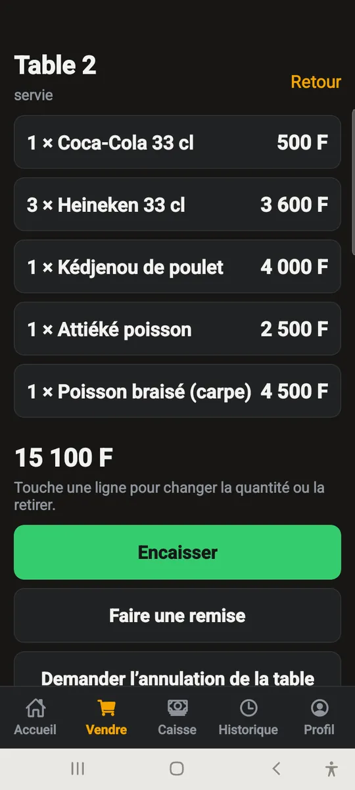
Encaisser
- Une fois la commande validée, « Encaisser » apparaît : touche-le et choisis le mode de paiement.
- Une remise ne se fait pas ici : c’est la caisse qui l’accorde, avec son motif, avant que tu encaisses.
- En espèces, saisis ce que le client t’a tendu : l’application calcule la monnaie.
- En Mobile Money, montre le QR au client et saisis le numéro avec lequel il a payé. Puis touche « Photographier le reçu » : prends en photo l’écran du client (le reçu Wave, Orange, MTN ou Moov). Le téléphone lit le montant et le compare à la commande ; la caisse voit la photo. La photo est gardée 30 jours.
- Si le client ne paie qu’une partie maintenant, touche « Payer un acompte » et indique ce qu’il donne : le reste attend un prochain encaissement, tu ne peux pas encaisser deux fois la même chose.
- Remets ensuite l’argent au caissier : c’est lui qui valide et édite la facture.
- Tant que tu n’as pas remis l’argent, il apparaît à ton nom sur l’écran du propriétaire.
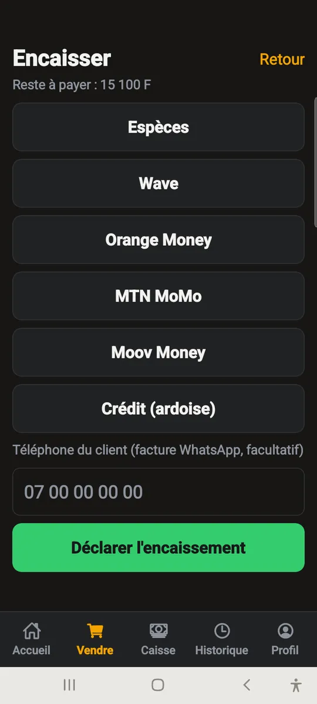
Quand le client part : libérer la table
- Une table payée reste occupée : elle affiche « payée · à débarrasser » avec le temps pendant lequel elle a été occupée.
- Quand le client est parti et que la table est débarrassée, touche « Table libre » : la durée d’occupation s’arrête là.
Annuler
- Appui long sur une table pour annuler sa commande.
- Si rien n’est encore parti au bar, l’annulation est immédiate.
- Si la commande est déjà partie, tu demandes : la caisse validera.
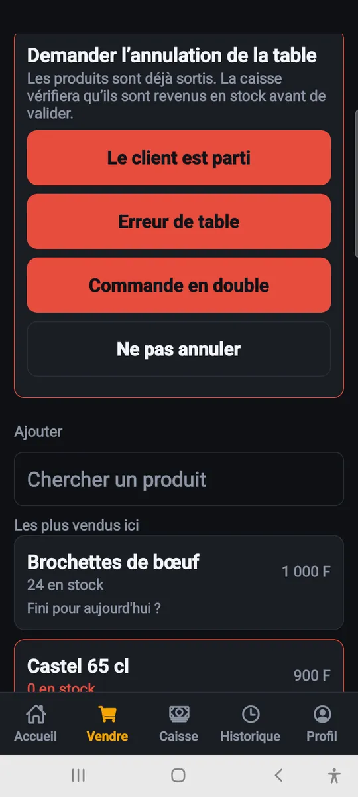
Je tiens la caisse
Caissier ou caissière : valider les paiements, compter le tiroir, remettre l'argent.
Ouvrir la caisse
- Au début du service, compte les espèces présentes et saisis-les comme fond de caisse.
- Sans cette étape, l’écart de fin de service ne veut rien dire.
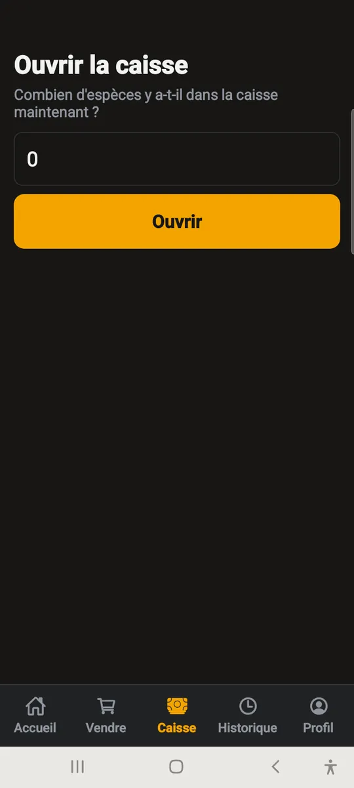
Pendant le service
- « Commandes à préparer » affiche ce que les vendeurs ont validé : sers, puis touche « Sortie validée ».
- « Annulations demandées » : valide ou refuse. En validant, les produits reviennent en stock.
- « Sorties faites, pas encore encaissées » : ce qui est parti du bar et que tu attends toujours en argent.
- « Stock et alertes » : ce qui reste, ce qui manque, et la saisie des livraisons reçues. Les prix et la carte restent au propriétaire.
- « Paiements à valider » : compte l’argent que le vendeur te remet, puis valide.
- La monnaie à rendre est affichée : c’est toi qui la rends au client.
- Un paiement Mobile Money peut arriver avec le reçu photographié par le vendeur : regarde la photo, le montant lu et les alertes (montant différent, reçu déjà utilisé, reçu ancien). Une photo n’est pas une preuve : vérifie aussi sur le téléphone marchand avant de valider.
- « Retours de produits à valider » : un client qui rend plusieurs marques arrive sur une seule carte. « Boissons à garder » : accepte ou refuse la demande du vendeur (jamais la tienne) ; « Servie au client » quand il revient.
- Si le montant ne correspond pas, choisis un motif : l’écart est tracé au nom du vendeur.
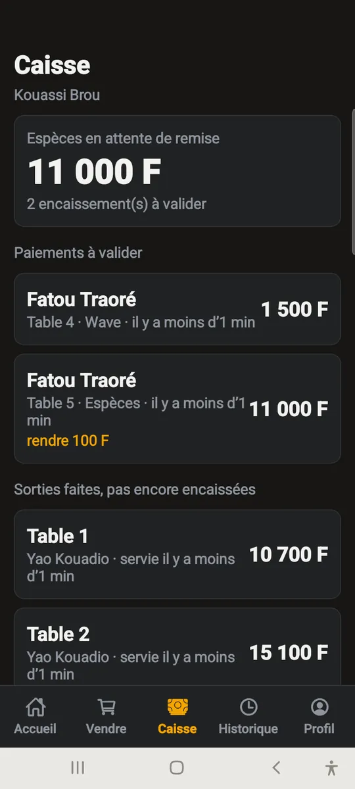
Fermer la caisse
- Compte les espèces réellement présentes et saisis le total.
- L’application affiche l’écart avec ce qui était attendu.
- Un écart nul le premier soir est rare : ce qui compte, c’est qu’il diminue au fil des jours.
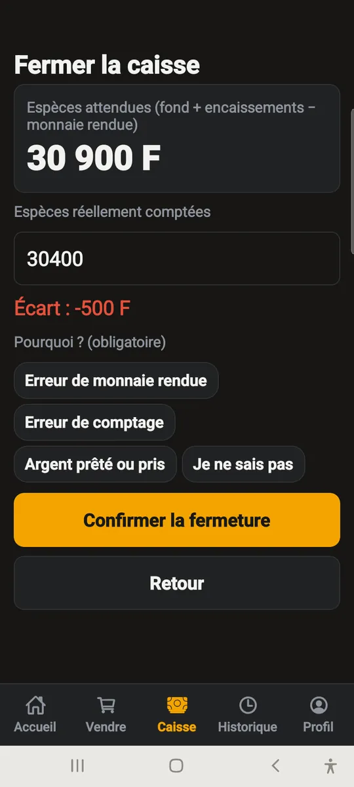
Je gère
Gérant : le stock, les livraisons, l'inventaire, les fournisseurs.
Dates limites : ce qu’il faut écouler
- À la livraison (Stock, touche le produit, ou Bon d’achat), « Date limite (facultatif) » : touche une durée (7 jours, 1 mois, 6 mois…) ou « Une date… » et écris celle du produit, par exemple 25/12/2026. Sans date, rien ne change.
- Sur l’accueil du propriétaire, « À écouler » apparaît dès qu’une livraison datée a encore du stock. Il range les lots : déjà périmés, cette semaine, ce mois-ci, plus tard.
- Mon Djê suppose que le plus ancien part d’abord : ce qui reste en stock vient des livraisons les plus récentes, et les plus anciennes sont celles qui périment sans avoir été vendues. C’est une aide : l’inventaire fait foi.
- Un produit périmé : « Retirer du stock (périmé) » le sort du stock comme une perte « Périmé », avec ton nom. Seuls le propriétaire et le gérant le peuvent.
- Chaque matin à 7 h, le propriétaire et le gérant reçoivent une notification : les produits périmés ou qui périment dans la semaine.
La carte
- « Ajouter depuis le catalogue Mon Djê » : coche les produits, saisis leurs prix.
- Un produit absent du catalogue s’ajoute à la main : il sera proposé au catalogue commun.
- Touche un produit pour corriger son nom ou son prix. Les ventes déjà passées ne changent pas.
- Un produit marqué « prix à saisir » a été déposé par l’équipe Mon Djê à ta demande : donne-lui son prix, il passe aussitôt en vente.
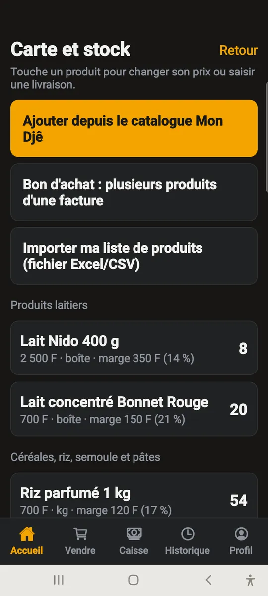
Le stock
- À chaque livraison, touche le produit et saisis ce que tu as reçu, en casiers ou à l’unité.
- Le stock baisse tout seul à chaque vente, et remonte à chaque annulation.
- Le bouton « Stock » ouvre deux vues : tout le stock, ou seulement ce qui est descendu au seuil.
- « Meilleures ventes » classe tes produits sur 30 jours, par quantité ou par argent : le plus vendu n’est pas toujours celui qui rapporte.
- « Stock bas » prévient avant la rupture : l’alerte se déclenche quand la quantité restante descend au seuil du produit, seuil que tu règles en touchant le produit.
- À l’import du catalogue, le seuil vaut la moitié du casier — six bouteilles pour un casier de douze. Sans casier, il vaut cinq.
- Changer tous tes prix dans Excel : dans « Importer ma liste de produits », touche « Télécharger mon fichier à jour », modifie les noms, les prix ou la colonne Actif (oui ou non), puis réimporte-le. Les lignes qui gardent leur Réf. sont mises à jour, et tu vois chaque changement avant de l’appliquer.
- Le fichier ne change jamais le stock et ne supprime rien : pour retirer un produit de la carte, écris « non » dans la colonne Actif.
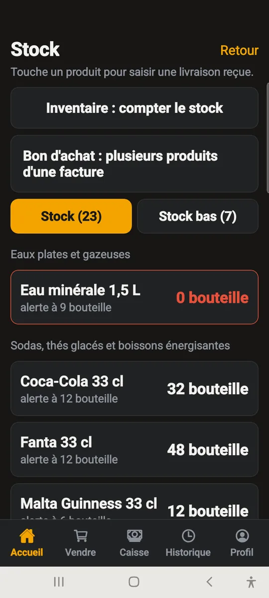
L’inventaire
- « Stock → Inventaire : compter le stock » : compte ce qu’il y a vraiment, sans regarder le stock calculé par l’application — c’est fait exprès, pour que ton comptage ne soit pas influencé.
- Une fois le comptage terminé, le propriétaire ou toi voit l’écart, le motive (casse, consommé, erreur de comptage…) et régularise : le stock passe alors au chiffre compté.
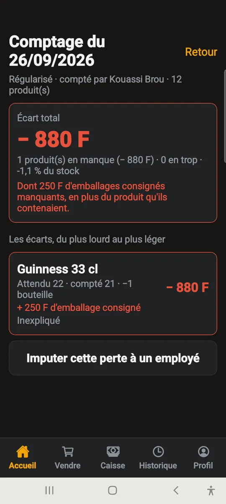
Les fournisseurs
- Un fournisseur se crée à la première livraison, ou depuis « Fournisseurs ».
- Ce que tu leur dois se calcule tout seul : quantité livrée × prix payé, moins ce qui a déjà été réglé.
- Un règlement en espèces pris dans ton tiroir baisse l’attendu de ta caisse à la fermeture : coche « Espèces de ma caisse ».
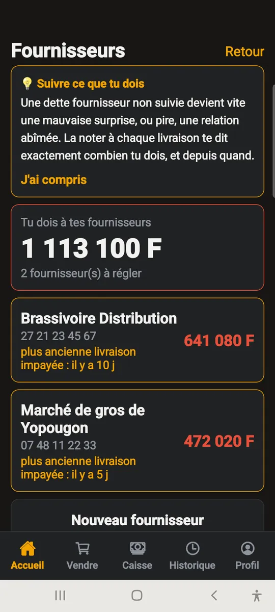
La trésorerie
- « Trésorerie » montre, compte par compte (espèces, Wave, Orange Money, MTN, Moov, banque), ce qu’il y a réellement.
- Touche « Compter » de temps en temps pour dire ce que tu as vraiment : sans ce pointage, les chiffres ne sont pas fiables.
- Un dépôt, un retrait ou ton propre apport se notent avec « Transfert ».
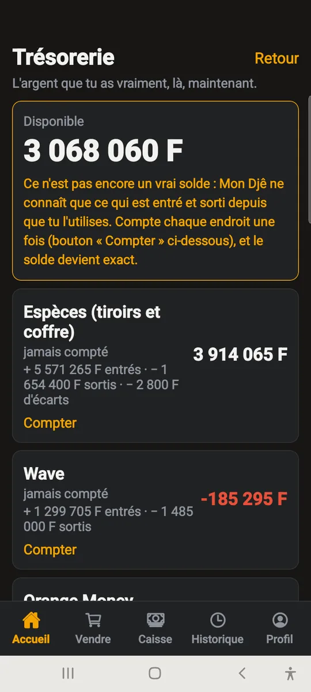
Je suis le propriétaire
Propriétaire : la carte, l'équipe, les chiffres, l'abonnement.
Ton personnel
- Crée un compte par personne, avec ses rôles. Une personne peut en cumuler plusieurs.
- Donne-lui son code provisoire ; elle le changera elle-même dans Profil.
- Quand quelqu’un part, désactive son compte : il ne pourra plus se connecter, mais son historique reste.
- Ne partage jamais ton propre compte : c’est lui qui voit l’argent.
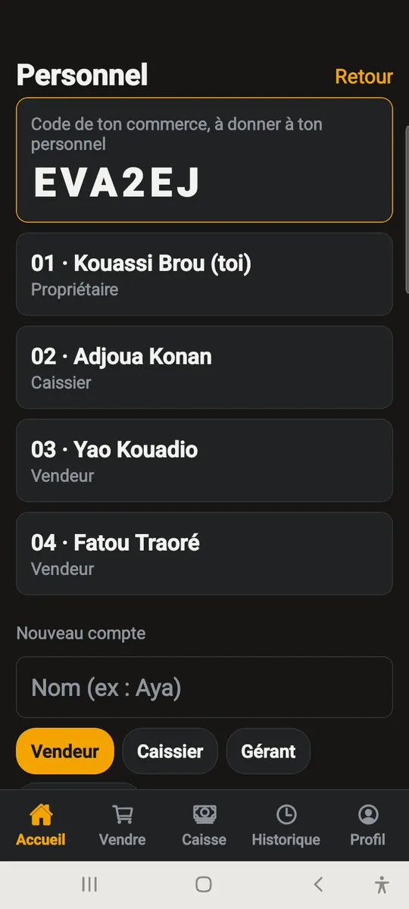
Ce que tu dois regarder chaque soir
- « Espèces encaissées non remises » : de l’argent est chez un vendeur. Il doit finir à zéro.
- « Écarts constatés » : le caissier a reçu moins que déclaré.
- « Auto-validés » : quelqu’un a déclaré et validé son propre encaissement. Normal s’il tient seul la caisse.
- Dans Historique, l’onglet Caisses donne l’écart de chaque service.
- « Activité du jour » montre, en un coup d’œil, toutes les commandes en cours dans le commerce (pas seulement celles d’un vendeur) et ce qui est sorti du stock aujourd’hui — ventes, pertes, ajustements.
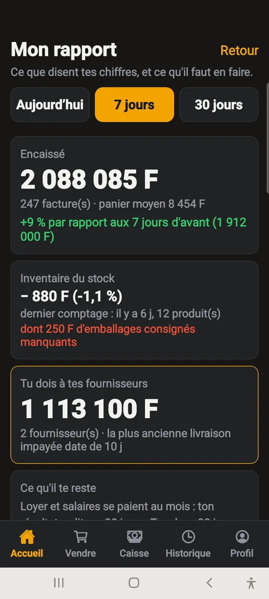
Le cahier de dépenses
- « Dépenses » enregistre tout ce qui sort du commerce : salaires, loyer, factures, frais divers.
- Une dépense qui revient chaque mois (loyer, salaire) se note « Chaque mois » : elle te sera rappelée, sans jamais s’écrire toute seule à ta place.
- Fixe un budget par catégorie : le rapport te prévient dès que tu le dépasses.
- Le seuil de rentabilité (dans Dépenses) dit combien vendre par jour pour couvrir tes charges fixes — il n’apparaît que si assez de tes prix d’achat sont connus.
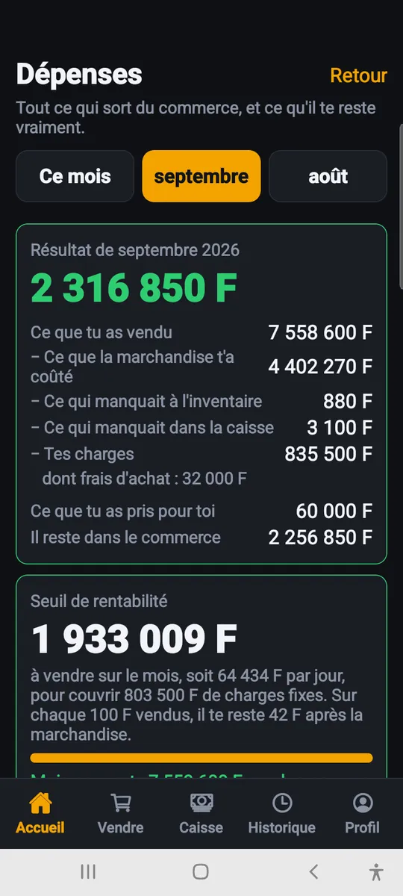
Avances au personnel
- Donne une avance depuis « Avances au personnel » : à qui, combien, comment.
- Elle se récupère plus tard, en espèces ou en Mobile Money, ou « déduite du salaire » — dans ce dernier cas, note simplement un salaire plus petit ce mois-là dans le cahier de dépenses.
- Ce que ton personnel te doit encore apparaît dans la Trésorerie.
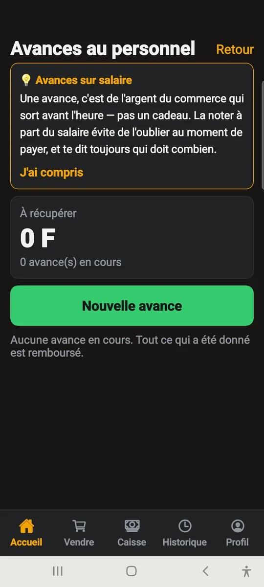
La paie du personnel
- Seul le propriétaire voit « Paie du personnel ». « Nouvel employé » : le nom, le poste, le téléphone, le rythme (mois, semaine, jour) et le salaire convenu. L’employé n’a pas besoin de compte.
- Touche l’employé puis « Établir une fiche de paie » : la période, le salaire de base, les primes, les heures supplémentaires, l’avance déduite, les absences. Le net à payer se calcule en bas.
- Une fiche établie ne change plus : une erreur se corrige par « Corriger : une fiche qui la remplace ».
- « Message WhatsApp » envoie un résumé à l’employé ; « Envoyer le PDF » ouvre le partage (WhatsApp, Gmail, Fichiers).
- C’est un reçu de salaire, pas un bulletin déclaré : aucune cotisation CNPS ni aucun impôt n’y est calculé.
Le relevé d’activité
- Pour demander un crédit à une microfinance ou une banque : « Relevé d’activité » (propriétaire seul). Choisis 3, 6 ou 12 mois, écris le nom de l’institution et la durée du lien, puis « Établir le relevé » (il faut du réseau).
- Tu reçois un code. « Envoyer le lien » le partage par WhatsApp ou SMS ; « Envoyer le PDF » donne un document. L’institution tape le code sur mondje.ci/verifier, sans compte.
- Les chiffres sont calculés par le serveur : personne ne peut les changer. Aucun nom de client ni d’employé n’y figure.
- C’est un état établi à partir de ce que tu as saisi, sans audit : il ne recommande aucun crédit. Tu vois combien de fois il a été consulté et tu peux le révoquer.
Le carnet de tontine
- « Tontines » (propriétaire et gérant) remplace le cahier d’un groupe qui cotise à tour de rôle : qui a cotisé, qui a reçu le pot. Les membres n’ont pas besoin de compte.
- « Nouvelle tontine » : le nom, la cotisation de chacun, le rythme, le jour du premier tour, les membres (nom, téléphone) et l’ordre de réception du pot : dans l’ordre de la liste, ou par tirage au sort (la date du tirage est gardée).
- Touche un tour : « Noter sa cotisation » pour chaque membre, puis « J’ai remis … à … » quand le pot est remis. Un membre en retard apparaît en rouge, avec « Rappel WhatsApp ».
- « Partager le carnet (PDF) » et « Message pour le groupe » envoient la situation aux membres. Une écriture ne s’efface pas : on l’annule avec un motif.
- Mon Djê est un carnet : il note, il ne garde pas l’argent, ne prête pas, ne verse aucun intérêt et ne garantit aucune cotisation.
Ton image
- Dépose ton logo : il apparaît ici et en tête de chaque facture envoyée aux clients.
- Dépose ton QR marchand : tes vendeurs le montreront aux clients qui paient par Mobile Money.
- « Téléphones du commerce » : ton mobile et ton fixe s’impriment sur chaque facture, pour qu’un client puisse te rappeler.
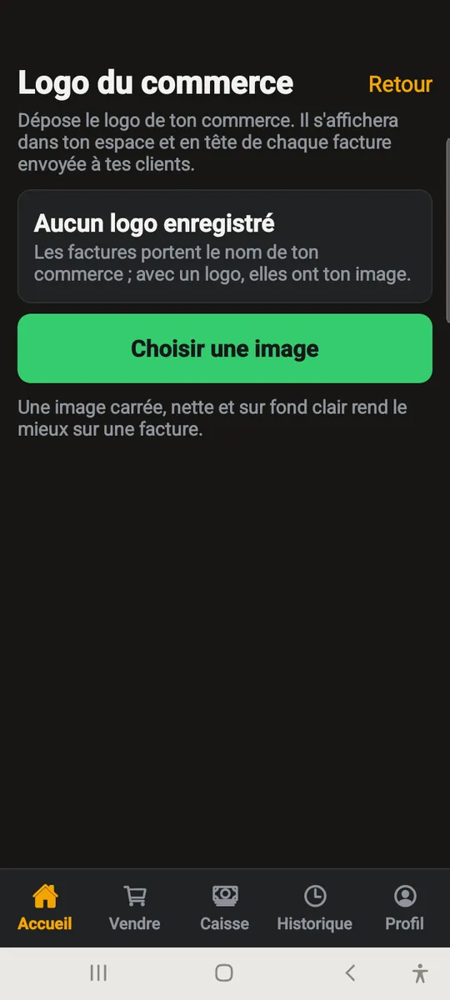
Nous joindre
- « Assistance Mon Djê » ouvre une conversation avec notre équipe : une question, un problème pendant le service, un produit à ajouter.
- Demande-nous d’installer des produits sur ta carte : nous te réclamons tes prix, ou nous les saisissons si tu nous les as donnés.
- Un produit que nous déposons sans prix reste invisible à la vente tant que tu n’as pas fixé le tien.
- Le bouton annonce nos réponses. Il faut du réseau : la messagerie ne fonctionne pas hors ligne.
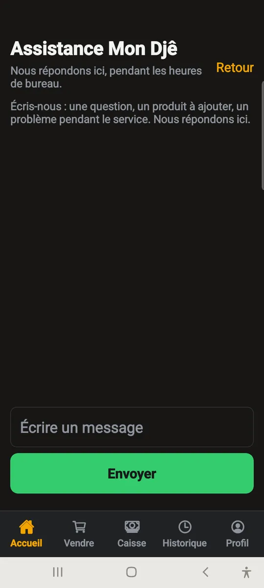
Chambres, logements, véhicules
Locations : séjours, réservations, cautions, baux, véhicules.
Chambres et séjours
- Dans « Séjours », touche une unité libre pour enregistrer une arrivée : nom du client, téléphone ou pièce d’identité, durée.
- Le tarif est celui de l’unité. Si tu en donnes un autre, l’application demande pourquoi : le motif est gardé.
- Tout ce que le client consomme (bar, restaurant) s’ajoute à la note de sa chambre. Encaisse comme une commande ordinaire.
- « Prolonger » ajoute une nuit à la note. « Enregistrer le départ » libère l’unité, même si la note n’est pas soldée.
- Une unité n’est occupée que s’il y a un séjour en cours : personne ne peut la marquer occupée à la main.
- Réservations et calendrier : « Réservations et calendrier » retient une unité pour des dates, sans rien encaisser. Deux réservations ne peuvent pas se chevaucher. Le jour venu, touche l’unité : l’arrivée réalise la réservation.
- Une réservation ne se modifie pas : annule-la (ou déclare le client absent) avec un motif, puis refais-la.
- Caution : elle se prend à l’arrivée ou plus tard, se garde à part de la caisse, et doit être rendue ou en partie retenue (avec un motif) avant le départ. Ce n’est pas un revenu.
- Départ avant la date prévue : la note reste facturée toute la durée. Pour rendre les nuits non passées, choisis « Départ et remise » : elle s’écrit avec son motif.
- Véhicules : chaque véhicule a sa fiche (immatriculation, compteur, km inclus par jour, prix du km en plus, assurance, visite). À la remise, note le kilométrage, le carburant et les dégâts déjà présents ; au retour, note-les de nouveau : les kilomètres en plus et le carburant manquant s’ajoutent à la note.
- Le compteur d’un véhicule ne recule jamais. Ce qu’il a de plus entre un retour et le départ suivant s’écrit comme « km hors location » et se voit dans le rapport : un véhicule qui roule sans être loué, c’est de l’argent qui s’en va.
- Baux et loyers : « Baux et loyers » loue une unité au mois. Le serveur crée chaque mois le loyer de chaque bail ; tu l’encaisses comme une vente (l’acompte est possible), et la facture devient une quittance de loyer.
- Un loyer ne s’annule pas : pour le baisser une fois, fais une remise avec son motif. Un bail ne se modifie pas : pour changer le loyer, on le résilie et on en refait un. Un loyer en retard se relance par WhatsApp depuis la fiche du bail.
- Un bail déjà en cours à la saisie commence au mois courant : on ne crée pas d’arriérés qu’on ne connaît pas. Le dépôt de garantie se rend ou se retient (avec un motif) avant de résilier.
- Ménage : une chambre libre après un départ affiche « À nettoyer » ; touche « Ménage fait » quand c’est fait. Le propriétaire peut mettre une unité hors service (travaux, panne) : plus d’arrivée ni de réservation.
- Taxe de nuitée : le propriétaire l’active dans « Mes chambres » (ex : 500 F par nuit). Chaque nuit de séjour ajoute alors une ligne « Taxe de nuitée » à la note, à côté de la nuitée. Une sieste, une journée ou un mois n’en portent pas.
- Sieste : choisis « Sieste » à l’arrivée, puis le nombre d’heures (le prix est celui de l’heure). L’écran de la chambre dit combien de temps il reste ; quand le forfait est dépassé, une alerte rouge s’affiche chez le vendeur, le caissier et le propriétaire. Prolonge d’une heure ou libère la chambre.
- Compteur CIE (résidences meublées) : si le propriétaire a réglé le prix du kWh, note l’index du compteur à l’arrivée (obligatoire) et au départ. La consommation s’ajoute à la note sur sa propre ligne « Électricité (CIE) » : elle ne change jamais le prix de la nuitée.
- TVA : si elle est appliquée (immobilier commercial, événementiel), les prix sont TTC et la facture détaille le hors taxe, la TVA de 18 % et le total.
- Ménage : dans « Tâches du personnel », l’onglet « Résumé du jour » dit combien de chambres ont été nettoyées, par qui et en combien de temps, ce qui attend encore et combien d’espaces sont libres ou occupés. « Partager le résumé » l’envoie par WhatsApp ou mail. Chaque soir à 18 h, le propriétaire et le gérant reçoivent aussi ce résumé en notification (rien les jours sans ménage) ; le propriétaire peut le couper dans ce même onglet. L’onglet « Historique » garde tout ce que chaque personne a nettoyé.
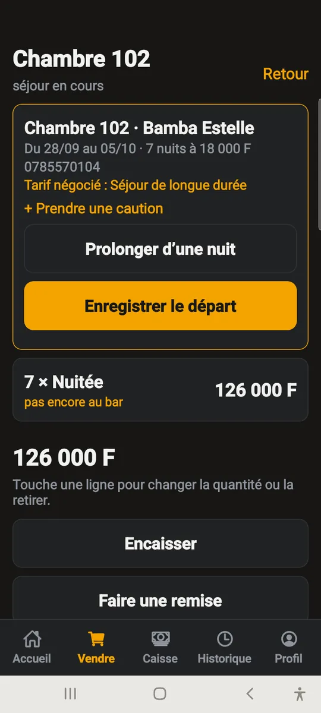
Gérance et abonnements
Un véhicule confié à un chauffeur, un abonnement : ce qui est dû, ce qui est versé.
Gérance et abonnements : les versements
- Le propriétaire ou le gérant ouvre un contrat : « Versements » sur l’accueil (ou l’onglet « Versements » dans Vendre), « Nouveau contrat ». Gérance (une moto, un taxi confiés à un chauffeur) ou abonnement : qui verse, combien, à quel rythme (chaque jour, semaine ou mois), et depuis quand.
- Pour un versement chaque jour, on choisit les jours où il est dû (par exemple du lundi au samedi : le dimanche, rien n’est dû). Un abonnement mensuel tombe le 1er du mois.
- Mon Djê calcule ce qui est dû depuis la date de début. Chaque carte dit « À jour » ou « Reste dû » avec le nombre d’échéances de retard, en rouge.
- Quand l’argent arrive, « Noter un versement » : touchez le montant (une échéance, deux…) et le mode de paiement. Le versement est alors « à valider ».
- Un autre membre valide : la caisse, le gérant ou le propriétaire. Celui qui a reçu l’argent ne valide pas son propre versement (le propriétaire, si). Tant qu’il n’est pas validé, il ne fait pas baisser ce qui est dû.
- « Rappeler (WhatsApp) » envoie un message déjà écrit avec le montant qui reste dû. « Historique » montre les derniers versements.
- Un contrat ne se modifie pas : « Clore » l’arrête (avec une raison) et le dû s’arrête ce jour-là ; on en ouvre un autre si les conditions changent.
Livraisons à domicile
Porter la commande chez le client, encaisser, remettre l’argent.
Livraisons : porter la commande chez le client
- Dans Vendre, onglet « Livraisons » (ou « Livraisons » sur l’accueil du propriétaire), touchez « Nouvelle livraison ». Écrivez le nom, le téléphone, l’adresse et un repère (« en face de la pharmacie »), choisissez les frais de livraison et, si vous voulez, qui livre.
- L’application ouvre ensuite la vente : choisissez les produits de la commande. Les frais de livraison s’y ajoutent tout seuls.
- « Partir en livraison » met la livraison en route. « Prévenir le client (WhatsApp) » envoie un message déjà écrit avec le montant à payer.
- Chez le client, le livreur encaisse et touche « Encaisser » pour déclarer l’argent reçu : la caisse validera quand il remettra les espèces. Puis « Livrée ».
- Livrer sans rien encaisser est refusé : seul le propriétaire ou le gérant peut le faire, avec un motif (client habitué, déjà payé…).
- Le client est absent ou injoignable ? « Impossible de livrer » demande la raison, gardée avec la livraison. Une livraison faite ou en échec ne se rouvre pas.
Salon, garage, clinique : rendez-vous
Prendre les rendez-vous, prévenir le client, noter qui est venu.
Rendez-vous : l’agenda du jour
- Dans Vendre, onglet « Rendez-vous » (ou « Rendez-vous » sur l’accueil du propriétaire), touchez « Nouveau rendez-vous ». Écrivez le nom du client, son téléphone pour le prévenir et ce qu’il vient faire, puis touchez le jour, l’heure et la durée : pas besoin de taper l’heure.
- Si un autre rendez-vous tombe en même temps, l’application vous le dit : vous pouvez garder le créneau (deux personnes travaillent peut-être ensemble) ou changer l’heure.
- L’onglet « Aujourd’hui » montre la journée dans l’ordre. « Prévenir le client (WhatsApp) » envoie un rappel déjà écrit : jour, heure, commerce.
- Quand le client arrive, touchez « Il est venu » ; s’il ne vient pas, « Il n’est pas venu ». Un rendez-vous clos ne se rouvre pas.
- Le client change d’avis ? « Déplacer » change le jour et l’heure ; « Annuler » demande une raison, gardée avec le rendez-vous.
- Un rendez-vous n’est pas une vente : quand le client paie, vendez la prestation comme d’habitude, la caisse valide.
Boulangerie, pâtisserie
Fabriquer et vendre : recettes, fabrication du jour, invendus.
Fabriquer et vendre : recettes, fabrication, invendus
- Le propriétaire ou le gérant écrit une recette : dans Accueil, « Fabriquer et invendus », « Nouvelle recette ». Il choisit le produit fabriqué (le pain), ce qu’une fournée donne (200 pains) et les ingrédients d’une fournée (25 kg de farine, 1 kg de sel). Les produits doivent exister dans « Carte et stock ».
- Quand on fabrique, dans Vendre, onglet « Fabriquer » : touche « Fabriquer » sur la recette, écris le nombre de fournées, valide. Les pains entrent en stock, la farine et le sel en sortent, avec ton nom.
- S’il manque un ingrédient en stock, l’application te le dit avant de fabriquer. Tu peux continuer : le stock sera négatif tant que la livraison n’est pas saisie.
- Quantités en nombres entiers : 25 kg, 100 œufs. Pour de petites quantités, prends une unité plus petite (grammes, pièces).
- En fin de journée, « Déclarer des invendus » : écris ce qu’il reste de pain non vendu. Ces produits sortent du stock comme invendus, avec ton nom : le propriétaire voit ce qui a été fabriqué, vendu et jeté.
- Chaque produit fabriqué montre, pour aujourd’hui : fabriqué, vendu, invendus, et ce qui reste en stock. Si le stock ne correspond pas à ce que tu comptes, fais un inventaire.
Atelier, pressing, cordonnerie
Objets confiés par les clients : déposer, suivre, prévenir, rendre.
Dépôts : les objets confiés à l’atelier
- Un client dépose un objet (chaussures, linge, téléphone) : dans Vendre, onglet « Dépôts », touche « Nouveau dépôt ». Écris son nom, son téléphone, ce qu’il dépose, le prix convenu et pour quand. Donne-lui le numéro du bon.
- Il peut laisser un acompte tout de suite : touche « Prendre un acompte ». Le reste se paie quand il reprend son objet.
- Fais avancer l’objet : « Commencer le travail », puis « C’est prêt ». Les objets en retard ou à rendre aujourd’hui sont en rouge.
- Quand c’est prêt, « Prévenir le client (WhatsApp) » envoie un message avec le numéro du bon et le reste à payer.
- Pour rendre l’objet, le client doit avoir payé. Touche « Rendre au client » : s’il reste à payer, encaisse d’abord. Le propriétaire ou le gérant peut le rendre sans encaisser, en choisissant un motif.
- Un objet jamais revenu depuis 7 jours est signalé « relancer le client ». Le propriétaire ou le gérant peut le clore (« Jamais retiré »).
Pour tout le monde
Se connecter, et que faire quand le réseau coupe.
Vendre au poids
- Tomates, viande, poisson, riz au détail : le propriétaire crée le produit avec l’unité « 100 g » (Carte et stock, « Nouveau produit »). Le prix est celui des 100 g : 250 F les 100 g font 2 500 F le kilo, et l’application affiche « 2 500 F le kg ».
- À la vente, touche le produit : la ligne s’ouvre. Écris le poids pesé dans « Poids pesé (kg) » : 1,5 pour un kilo et demi, ou 500 g. « Appliquer ce poids » met la quantité et le prix à jour. Les boutons − et + changent de 100 g.
- On pèse par 100 g : 1,55 kg est refusé, 1,6 kg passe. Le stock, les alertes et la facture se lisent en kg (« Tomates (1,5 kg) »).
- À la livraison, écris le poids reçu en kg (12,5) et, si tu veux, le prix payé au kilo : Mon Djê calcule la quantité en stock et ta marge.
- À l’inventaire, un produit au poids se compte en nombre de 100 g : 12,5 kg = 125.
Se connecter
- Sur un téléphone déjà utilisé ici, touche ton nom dans la liste et tape tes 6 chiffres.
- Sur un téléphone neuf, saisis le code du commerce, ton numéro d’employé et ton code.
- Ton code est personnel : il signe tes ventes. Ne le donne à personne.
- Tu peux le changer toi-même dans Profil.
Les notifications
- Dès qu’une donnée t’est destinée, ton téléphone sonne : un paiement à valider pour la caisse, ton encaissement validé ou refusé pour le vendeur, une commande servie, une annulation, une tâche donnée, une chambre libérée pour le ménage.
- Tu n’es jamais prévenu de ce que tu viens de faire toi-même.
- Une notification ne montre jamais le nom d’un client : seulement la place, le montant, le motif et le nom du collègue.
- Le propriétaire et le gérant reçoivent aussi une alerte quand un produit passe sous son seuil ou tombe à zéro (une seule fois par passage). La réception est prévenue des réservations saisies ou annulées, et reçoit chaque matin à 7 h les arrivées prévues.
- Une caisse restée ouverte depuis plus de 20 heures est signalée chaque matin à 8 h au propriétaire, au gérant et au caissier, tant qu’elle n’est pas fermée. Le propriétaire est aussi prévenu de la fin de son abonnement (7 jours, 3 jours, 1 jour avant, puis le dernier jour).
- Réservations de la page publique : le client verse un acompte (un tiers du montant par défaut, réglable dans « Ma page publique ») et envoie la capture de son paiement avec sa demande. La demande reste « En attente d’acompte » ; la caisse regarde la capture, confirme le montant reçu, puis seulement accepte. L’acompte se déduit ensuite de la note (bouton « Déduire un acompte de réservation » sur la table ou le séjour).
- Une date éloignée (plus de 7 jours) : le client confirme sa venue dans les 24 heures avec le lien du mail que tu lui envoies (bouton « Envoyer la confirmation par mail », depuis ta messagerie) ; sans confirmation, la réservation expire toute seule.
- Le propriétaire reçoit ce qui se passe entre son personnel. Dans Profil, il choisit : « Tout », « L’essentiel » (refus, annulations, remises, crédits) ou « Rien ».
- Chaque catégorie (paiements, commandes, tâches, ménage) se coupe séparément dans les réglages Android de l’application.
Le bouton Urgence
- Dans Profil, le bouton rouge « Urgence : police, pompiers, secours » donne les numéros utiles : Police secours 110, 111, 170 et 100 ; Gendarmerie 145 ; pompiers 180 ; SAMU 185.
- Touche un numéro : le téléphone prépare l’appel, tu n’as plus qu’à le lancer.
- Le propriétaire et le gérant peuvent ajouter les numéros de leur quartier (leur brigade, leur clinique, un voisin).
Lire à voix haute, parler à l’application
- Dans Profil, « Lire à voix haute » : le téléphone lit la notification qui arrive pendant que l’application est ouverte, ou quand tu la touches. Pratique si tu lis peu ou si tu as les mains prises.
- Android ne permet pas de lire une notification reçue quand l’application est fermée : touche-la, elle sera lue.
- Dans la vente, le bouton « Dire le produit » écoute une phrase : « deux Flag », « trois Beaufort ». L’application te répète ce qu’elle a compris : tu confirmes, ou tu choisis dans la liste. Il faut du réseau pour la reconnaissance vocale, et les produits sont ceux de ta carte.
Quand le réseau coupe
- Continue à travailler : tout est enregistré sur le téléphone.
- Un bandeau orange indique combien d’opérations attendent d’être envoyées.
- Dès que le réseau revient, elles partent toutes seules et le bandeau disparaît.
- Un bandeau rouge veut dire que le serveur a refusé quelque chose : touche-le et préviens le propriétaire.